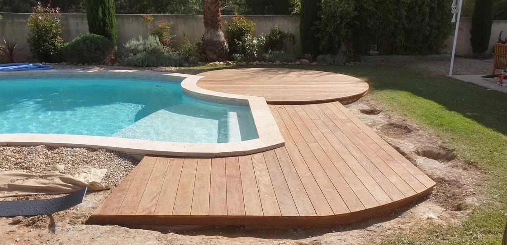
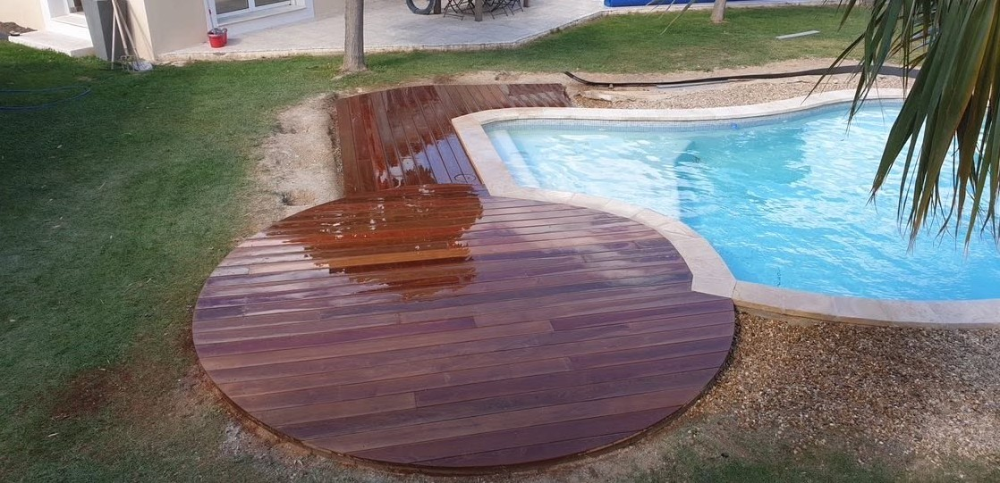
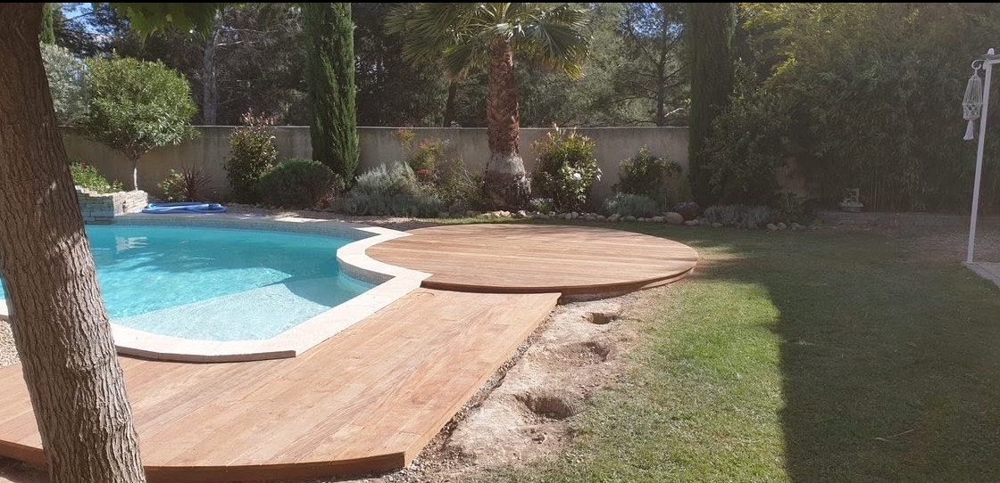
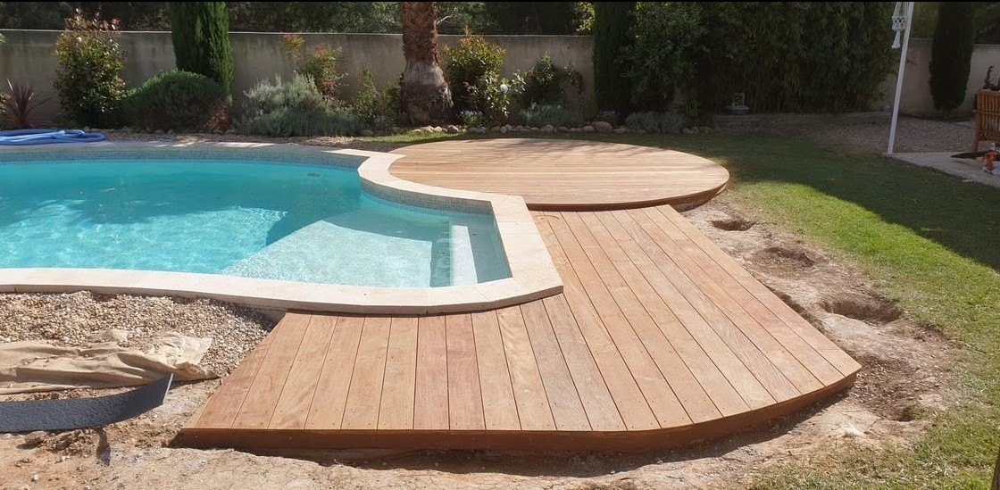
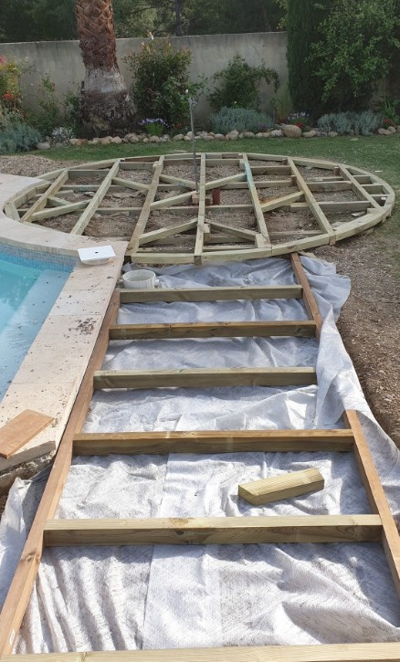

Le projet
Une terrasse pensée au millimètre.
La structure est dessinée pour suivre la géométrie libre du bassin. Les courbes, les raccords et les changements de direction mettent en valeur le bois tout en conservant une circulation fluide autour de la piscine.
Formes sur mesureUne terrasse adaptée aux courbes existantes.
Structure boisUne ossature réalisée spécifiquement pour le tracé du projet.
Finitions soignéesDes découpes et raccords pensés pour rester discrets.




